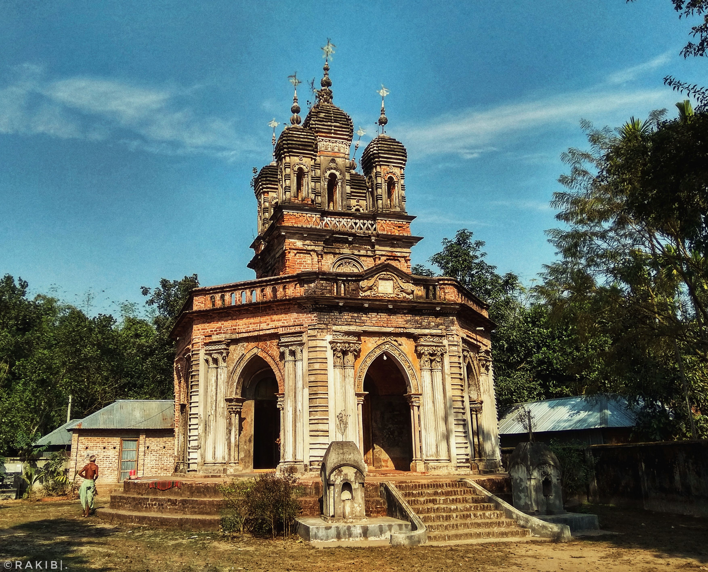
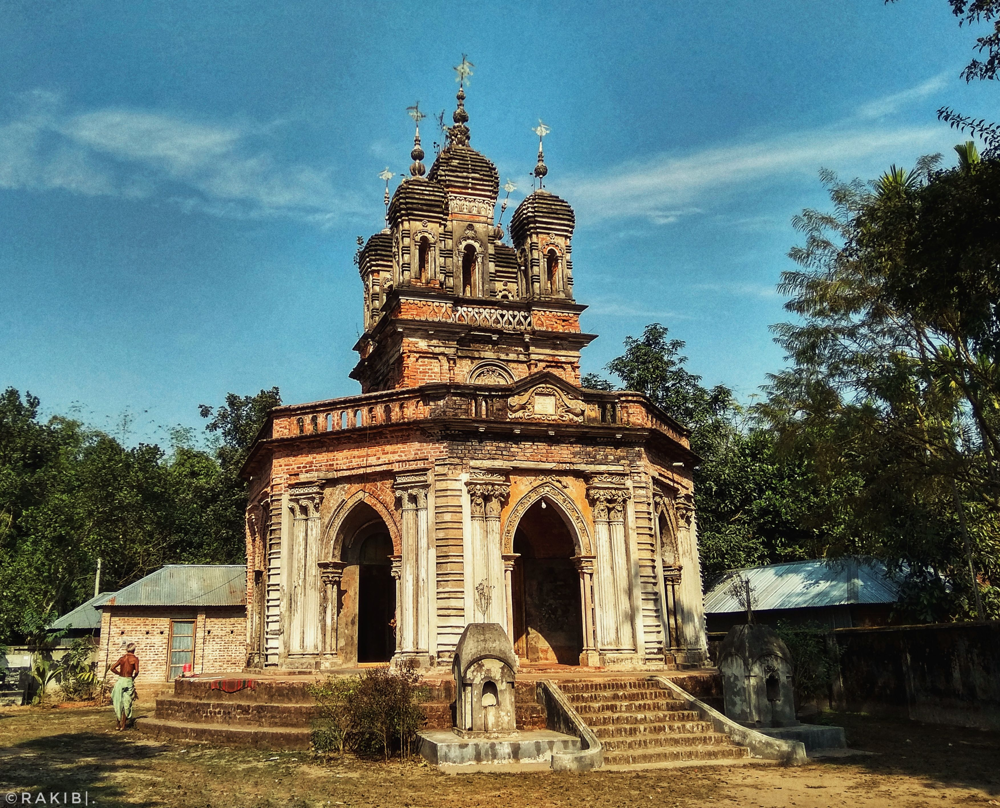

Bangladesh, country of south-central Asia, located in the delta of the Padma (Ganges [Ganga]) and Jamuna (Brahmaputra) rivers in the northeastern part of the Indian subcontinent. The riverine country of Bangladesh (“Land of the Bengals”) is one of the most densely populated countries in the world, and its people are predominantly Muslim. With the partition of India in 1947, it became the Pakistani province of East Bengal (later renamed East Pakistan), one of five provinces of Pakistan, separated from the other four by 1,100 miles (1,800 km) of Indian territory. In 1971 it became the independent country of Bangladesh, with its capital at Dhaka.
The Bengali language, Islamic religion, and rural character of Bangladesh all serve to unify the country’s culture to a considerable degree. Although some regional variation occurs across the Bengali community, cultural differences between ethnic, religious, and social minorities and between rural and urban populations are much more salient.
The places which amazed you the most & provide you feel the beauty of mother of nature.


Bangladesh has 8 districts and each of it possess a large number of natural and historial place.
Ahsan Manzil is one of the most significant architectural monuments of Bangladesh. The building structure was established on a raised platform of 1 meter, the two-storied palace measures 125.4 m by 28.75 m. The height of the first floor is 5 meters and the height of the first floor is 5.8 meters. The thickness of the walls of the palace is about 0.78 meters. There are porticos of 5 meters height on the northern and southern sides of the palace.
There is a direct bus service from Gulistan in Dhaka. You can also go by private car or auto CNG rickshaw.
The Shaheed Minar is a national monument in Dhaka, Bangladesh, established to commemorate those killed during the Bengali Language Movement demonstrations of 1952 in then East Pakistan. National, mourning, cultural and other activities are held each year on 21 February (Ekushey February) to mark Language Movement Day or Shaheed Dibas (Martyrs' Day), centered on the Shaheed Minar. Since 2000, 21 February is also recognized as International Mother Language Day.
Rickshaws can be taken from anywhere in the Dhaka University area.
Bangabandhu Bhaban also is known as Bangabandhu Memorial Museum or simply referred to as Dhanmondi 32 was the personal residence of the founding father and President of Bangladesh. Sheikh Mujib was killed along with most of his family in the residence, and today it is a museum. It is located in Dhanmondi, Dhaka.
Any bus, CNG, taxi cab, or rickshaw from Gabtoli, Motijheel, Farmgate, and New Market area of Dhaka to Dhanmondi can be taken to Bangabandhu Sheikh Mujib Memorial Museum.
The Curzon Hall is a British Raj-era building and home of the Faculty of Sciences at the University of Dhaka.Curzon Hall, meant to be a town hall originally, was named after Lord Curzon Viceroy of India, who laid its foundation in 1904 at the time of Bengal partition Th magnificent establishment, a part of the University of Dhaka, gloriously represents the architectural Style of Dhaka, elements. which is a happy blend of European and Mughal.
Anyone can visit Curzon Hall by road with taxi/three-wheeler/bus from anywhere in Dhaka.
Keokradong is the highest recognized peak of Bangladesh while Tajingdong is the 2nd, Situated in Ruma Upazila both are surrounded by small hills and mountains. There are two popular trekking routes for trekkers. Trailing the routes, exploring indigenous people and their lifestyle are rare opportunities that you can have in pleasing natural setting of hills and mountains, trees and shrubs, sky and rivers, birds and animals and floating clouds around you.
First of all, from anywhere in Bangladesh, you have to come first to Bandarban to go to Kokrodong. From Dhaka you will find Bus, It takes 8-10 hours going from Dhaka to Bandarban.Bandarban To Keokradong: When you want to go to Keokradong from Bandarban city, you have to go Ruma Bazar first. Then, from Ruma Bazar, you have to go to the Boga lake, then Keokradong.
Cox's Bazar is a city, fishing port, tourism center, and district headquarters in southeastern Bangladesh. It is famous mostly for its long natural sandy beach, and it is infamous for the largest refugee camp in the world. It is located 150 km (93 mi) south of the divisional headquarter city of Chittagong. Cox's Bazar is also known by the name Panowa, which translates literally as "yellow flower". Another old name was "Palongkee".
Cox's Bazar is connected by road and air with Chittagong. You can take a private car to Cox’s Bazar from any place in the country.
Sandwip is an island along the southeastern coast of Bangladesh in the Chittagong District. Also spelled Sandvip, the transliteration of the name would in fact be Shondip. It is part of the sub-district of Sandwip Upazila.Sandwip Island is to be attracted by its uniqueness it is a river island. Situated in the Meghna river estuary, the island is 50 km in length and 5-15 km in width. The scientists are in agreement that four to five years back the land size was seven to eight times bigger than the current size.
There are also various traditional places to visit on the island. In the north of the island, you can see the hundred-year-old Mariam Bibi Sahebani Mosque built on following the architecture of Taj Mahal. There are large Dighi adjacent to the mosque, and the shrine. In the south of the island, there is the traditional dry Dighi. There are also numerous mosques, schools, madrasas, large playgrounds. If you have good luck, you can enjoy the songs of the Baul singer (The local cultural song of Bengal). Further, you can also watch and enjoy on the north side of Sandwip, Amanular Char, northeast, Uri Char, Kalapani, on the south, Kalia Char.
Ramu is known for monasteries, temples, and various Buddhist statues and images. The most important sightseeing attraction of the place is a beautiful Buddhist Temple near Bakkhali on the Tiger canal. Various Buddhist relics and Burmese handicrafts are available here. The Rangkut Bonasram Buddha Bihar is the oldest temple in the area and is said to have been set up in 338 BC. The 100-feet golden-colored reclining statue of Lord Buddha, located at the Vimukti Bibeshan Bhabna Kendra Temple is considered to be the world’s third-largest Buddha statue.
Dhaka and Cox’s Bazar are linked by road. You can take a bus from Dhaka to reach Cox’s Bazar. You can go Cox Bazar bus service, private car and air.
Mahasthangarh is one of the earliest urban archaeological sites so far discovered in Bangladesh. The village Mahasthan in Shibganj thana of Bogra District contains the remains of an ancient city which was called Pundranagara or Paundravardhanapura in the territory of Pundravardhana. A limestone slab bearing six lines in Prakrit in Brahmi script recording a land grant, discovered in 1931, dates Mahasthangarh to at least the 3rd century BC. The fortified area was in use until the 8th century AD.
You can reach Bogra by bus from anywhere in the country and go to Mahasthangarh by CNG. Mahasthangarh is located from 15 km North Sathmatha, Bogra.

Natore Rajbari (also known as Pagla Raja\'s Palace, Natore Palace) was a prominent royal palace in Natore, Bangladesh. It was the residence and seat of the Rajshahi Raj family of zamindars. The famous queen Rani Bhabani lived here and after the death of her husband, expanded both the estate and the palace.
Rickshaws or auto rickshaws can be added directly from anywhere in the city of Natore. Rickshaw fare to Rajbari from Madrasa junction of the city is 20 taka.It is better not to reserve rickshaws or auto rickshaws for travel. Because all the places in the city of Natore have enough local vehicles.

Puthia Rajbari, located at Puthia Upazila in Rajshahi, is an Indo. European style two-story palace. The Palace was constructed in 1984 by Rani Hemanta Kumari in memory of her mother-in-law Maharani Sarat Sundori Devi. It is located 30 km from Rajshahi town. Besides the illustrious two-story Puthia Rajbari, there are 14 other recognized archaeological sites like Baro Shiva Mandir, Chotto Anik Temple. Boro Gobindo Temple, Chotto Gobindo Temple, Jagadhatri Temple, Keshta Khepar Math, and others in Puthia.
By using road/train/air from any places to Rajshahi then By local transport to Destination. Puthia is located 32 km north-east of Rajshahi district headquarters on the Natore highway. You can reach Puthia by bus from anywhere in the country and you can easily reach Natore or Rajshahi by train.

Uttara Ganabhaban, which was known as Estate Rajbari during the British and Pakistan period, was the palace of the Maharajas of Dighapatia. The government is now using the palace as the official residence of the head of the government of Bangladesh in the northern region. This is a historic place widely visited by tourists.
By using road/train/air from any places to Rajshahi then By local transport to Destination. Rickshaws or autorickshaws can be added directly from anywhere in the city of Natore. Rickshaw fare from Madrasa Junction to Uttara Ganobhaban is 30 rupees. It is better not to reserve a rickshaw or auto-rickshaw for travel. Because all the places in the city of Natore have enough local vehicles.

The Sundarbans, one of the most attractive places in Bangladesh, is the largest mangrove forest in the world. Visitors feel great enthusiasm and fascination to come to this nature’s bounties of exceptional character. The forest is a World Heritage Site for its extra-ordinary vegetation and diverse ecological balance. No other tidal forests can match it in terms of diversity.
By river: Beautiful forest can be reached by launching Khulna launch ghat. There are launches at night and in the morning.
By Road: Khulna can be reached by bus from Koira to Sundarbans.
CThe Sixty Dome Mosque (more commonly known as Shait Gambuj Mosque or Saith Gunbad Masjid), is a mosque in Bangladesh. It is part of the Mosque City of Bagerhat, a UNESCO World Heritage Site. It is the largest mosque in Bangladesh from the sultanate period (1204-1576). It was built during the Bengal Sultanate by Ulugh Khan Jahan, the governor of the Sundarbans.
From Bagerhat District Bus Stand, buses, microbuses, CNG, easy bikes/auto rickshaws can be added to the 60 Dome Mosque. Sixty-domed mosques can be seen on the side of the road as soon as you get out of the car.
The Shrine of Lalon Fakir is located in Kushtia district of Khulna division close to Kushtiya Railway Station. Lalon Fakir was born in 1774 and died in 1890. The details of Lalon’s early life are debatable and not possible to verify. He had many qualities, a spiritual leader, mystic poet, reformer, and composer of Baul songs.
The Shrine of Lalon Fakir is 2 km away from Kushtia railway station. You need to take a bus or CNG auto-rickshaw and head there from the rail station.From Kushtia bus stand by rickshaw/autorickshaw to a place called Cheuria, fare 30-50 /-. From Kushtia big railway station to bus stand by rickshaw/autorickshaw to a place called Cheuria, fare 20-30 /-
Shilaidaha Kuthibari is a place in Kumarkhali Upazila of Kushtia District in Bangladesh. The place is famous for Kuthi Bari; a country house made by Dwarkanath Tagore. Rabindranath Tagore lived a part of life here and created some of his memorable poems while living here.
The distance from Kushtia city to Rabindranath's cottage is about 20 kilometers. From Kushtia city, auto-rickshaws, CNG, and easy bikes and other vehicles can be used to reach Shilaidaha Kuti home easily and at very low cost.
If you want to get the taste of a mysterious rain forest, Lawachara is the perfect place to visit. The well-conserved forest offices you ample opportunities for trekking and jungle walking. You will enjoy over 460 different species of birds, mammals, and reptiles that live in this forest. They include deer, wild chickens, squirrels, pythons, endangered hoolock gibbons, capped languors, slow loris birds, snakes, banana spiders, etc.
From Dhaka to Kamalapur or from Airport Railway Station to Srimangal,Moulvibazar Railway Station by Upban, Jayantika, Parabat, or Kalni Express Train.By bus from Dhaka to Fakirapul or from Saidabad to Hanif Enterprise, Shyamoli Paribahan, Sylhet Express, ENA, etc. by non AC bus to Srimangal,Moulvibazar .You can go to Srimangal by bus or train from Chittagong. To reach Srimangal, Moulvibazar by train from Chittagong, two trains named Paharika and Udayan Express run 6 days a week.
Ratargul Swamp Forest is a freshwater swamp forest located in Gowain River, Fatehpur Union, Gowainghat, Sylhet, Bangladesh. It is the only swamp forest located in Bangladesh and one of the few freshwater swamp forests in the world. The forest is naturally conserved under the Department of Forestry, Government of Bangladesh.
Transportation: From Dhaka by road, rail or air to Sylhet and from there by any vehicle can be easily reached. From Sylhet city to Sylhet railway station or Kadamtali bus stand by CNG / autorickshaw will take about 1.30 hours. Distance: Distance from Kadamtali bus stand is 26 km.
Srimangal, the tea capital of Bangladesh, having most of the tea gardens of the country, is called "The land of two leaves and a bud". The largest tea garden in the world is situated here. There are terraced tea gardens and pineapple, rubber, and lemon plantation. It is more beautiful in the rainy season to stay at Srimangal having the highest rainfall in Bangladesh and the place has a mystic look. A good number of luxury hotels including a 5-star hotel and resort are available here.
Srimangal Tea Garden is located in Srimangal Upazila of Moulvibazar district. Without going to Sylhet, you can go directly to Srimangal, 190 km from Dhaka, by bus or train.
Transportation: From Dhaka by road, rail, or air to Sylhet and from there by any vehicle can be easily reached. From Sylhet city to Sylhet railway station or Kadamtali bus stand by CNG / autorickshaw will take about 1.30 hours.
Have you ever imagined any place that goes through the tea gardens, hills and leads you to a beautiful waterfall? If you didn't, just come to visit Madhabkunda waterfall. This is one of the highest waterfalls in Bangladesh. The green leafy trees, big bolder of black stones make this waterfall so charming and eye-catching.
By using road/train/air from any places to Sylhet then By local transport to Destination. Before reaching Baralekha by bus from Moulvibazar to Baralekha, you have to get off at Kathaltali market. From there you can go to Madhabkund by adding CNG autorickshaw 06 km east.
Kuakata is a beach town known for its panoramic sea beach. It is in southeastern Bangladesh and is the number of sizeable tourist destinations in the country. Kuakata beach is a sandy expanse 18 kilometers (11 mi) long and 3 kilometers (1.9 mi) wide. From the beach, one can have an unobstructed view of both sunrise and sunset over the Bay of Bengal.
From Dhaka or Jessore you can reach Kuakata directly from Gabtali or Sayedabad bus stand in multiple transport vehicles including BRTC, Druti Paribahan, Sakura Paribahan. You can also rent a car from anywhere. However, after Barisal, you have to cross the Lebukhali ferry to reach Kuakata by road.
From Dhaka Sadarghat, get in the luxury double decker MV Parabat, MV Beach, MV Sundarbans, MV Sampad, MV Prince of Barisal, MV Patarhat, MV Upakul Launch Cabin in the morning to Patuakhali or You can reach the tourist center Kuakata by getting off at Kalapara, adding a rent-a-car and taking a bus on the Patuakhali-Kuakata route. Launches on the mentioned routes from Dhaka leave the launch dock between 5 pm and 6 pm.

Char Kukri-Mukri Wildlife Sanctuary is a Wildlife sanctuary in Southern Charfession Upazilla of Bangladesh located on an island in Bay of Bengal in the south of the country. The area of the sanctuary is 40 ha (99 acres) and is elongated in shape. It is 130 km from the Bharisal town in the gangetic delta on the mouth of Meghana river. It is also called Charfesson wildlife sanctuary. Most part of the sanctuary is submerged twice in a day due to high tide and is covered with dense mangrove vegetation. The soil type is clay.
From Dhaka Sadarghat, Launches are available for Charfesson, BholaFrom Bhola first you have to go to Char Fashion's Char Kachhpiya. From there it is possible to reach Char Kukri Mukri by a trawler, boat, or small launch.
The floating market appears as the center of Barisal’s (aka The Venice of Bengal) beauty. Nobody knows when the idea of this floating market began, but it’s a hundred-year-old tradition. Development and modernization are taking over the country but it’s surprising to see them not reaching this river-oriented life yet. For more than 100 years, the local farmers have been experiencing the ups and downs of life along with the ebb and flow of the river. Many farmers and wholesalers gather here every day. Not the only guava, but there are also other fruits sold in this market.
After reaching Barisal Rupatoli bus stand, take “Dhanshiri Paribahan” leaving for Khulna. Ask the bus supervisor to stop at Kirtipasha Mor in Jhalakathi. The bus fare would be 60 takas. From there, take shared Auto Rickshaw to reach Vimruli by paying 20-30 taka.
Oxford Mission Epiphany Church, commonly known as Oxford Mission Church is an Anglican church in Barisal, a southern city in Bangladesh. It is one of the oldest and arguably the second largest church in Asia.
By road, you can reach Barisal from Dhaka to 6 to 8 hours. Every bus has left Barisal from Gabtali Bus Terminal for 6 to 10 pm every day. Most of the buses cross the Paturia Ghat to Barisal and some buses cross the Mawa Ghat to Barisal. Buses coming from Dhaka stops at the Nijulabad bus stand of Barisal.
Tajhat Palace, Tajhat Rajbari, is a historic palace of Bangladesh, located in Tajhat, Rangpur.This palace now holds the Rangpur museum. Tajhat Palace is situated three km. south-east of the city of Rangpur, on the outskirts of town.
The best transport from Dhaka to Rangpur is Green Line and TR Travels. Besides, ordinary buses of Agamani Paribahan, SR, Shyamoli, Hanif, Keya etc. run on this route. These buses leave from Kalyanpur and Gabtali in Dhaka at different times every day from morning to night. Good hotels in Rangpur include Hotel Shah Amanat (Shipping Company Junction), Hotel Golden Tower (Shipping Company Junction), Hotel The Park (Shipping Company Junction), Hotel Tilottama (Thana Road), Hotel Vijay (Jail Road), RDRS (Jail Road).
Kantaji Temple is a late-medieval Hindu temple in Dinajpur, Bangladesh. The Kantajew Temple is one of the most magnificent religious edifices belonging to the 18th century. The temple belongs to the popular Hindu Kanta or Krishna and this is most popular with the Radha-Krishna cult (assemble of memorable love) in Bengal.
The temple is located at Kantnagar, a quiet secluded village on the banks of the river Dhepa, about 12 miles north of Dinajpur city and about a mile west of the Dinajpur-Tetlia road.
Mirzapur Shahi Mosque is located at Mirzapur village in Mirzapur union under Atwari upazilla. The artifice of Mirzapur shahi mosque is similar to the mosque situated on the premises of Dhaka High Court which was probably made in the year of 1679. For this reason, it is thought out that the Mirzapur Shahi mosque was built in the contemporary period of the Dhaka high court mosque. It is well known that the construction work of this mosque was completed by a person named Dost Mohammad.
Both AC and Non AC buses are available from Dhaka to Panchagarh. There is a direct bus service from Panchagarh to Atwari upazilla. This bus will let you get down in Mirzapur Bazar. You will find the mosque 200 yards east from Mirzapur Bazar. It will not take more than 20 minutes for you to reach at Mirzapur by car.
Golakdham temple is located in Shaldanga village of Shaldanga union in Debiganj upazila of Panchagarh district. The temple was built in 1848. The temple is located about 12 km northwest of Debiganj Upazila Sadar. The temple is an excellent example of eighteenth-century architecture. This architectural technique is similar to the Greek method.
There are both AC and non AC bus services from Dhaka to Panchagarh. When reaching Panchagarh, they have to go to Bodaa and go to Lakkhi Hat. From there you can go to the Golokdham temple by Auto rickshaw.
Suryakanta Acharya Chowdhury, the successor of Muktagacha Zamindar dynasty built a luxurious two-storied palace named Shashi Lodge in the city of Mymensingh after the name of his adopted son Shoshikanta. This magnificent building was decorated with different types of fancy goods which were brought from different places in Paris and Europe. This original place was destructed by the massive earthquake in 1897 AD. Then this palace was rebuilt in one-storied between 1905 and 1911 by Shoshikanta. It is fairly a large area, occupying about nine acres of land, and approached through an imposing semi-circular arched gateway.
Rickshaws, autorickshaws can be added from Maskanda bus terminal or rickshaws, autorickshaws, tempos can be added from the bridge.

Susang Durgapur situated in one of the districts of Bangladesh called Netrakona is 182 km from Dhaka. It is a genuine natural splendor of woodland river & hills where the Garos and other tribals reside. One can easily take pleasure in boating in the river, seeing the green bushes around, climbing hills, etc. Wild elephants at times come from the jungle. However, going to Susang Durgapur is bothersome for both the domestic and overseas tourists because of the communication problem in this area. Nonetheless, especially during winter, Durgapur is crowded with many tourists.
By bus from Dhaka to Mymensingh, Mymensingh via Shyamganj Durgapur, or by bus from Dhaka to Netrokona, Netrokona to Durgapur. Then you can cross the Someshwari river by rickshaw or motor bike and take a semi-paved road to reach the plain area of Vijaypur.

Zainul Abedin Sangrahashala (alternate: Shilpacharya Zainul Abedin Sangrahashala; translation: "Great Teacher of the Arts" Zainul Abedin "Art Gallery")is an art museum in Mymensingh, Bangladesh. Established in 1975, it contains the collections of the artist Shilpacharya Zainul Abedin (1914–1976). The art gallery was established in Mymensingh as this is where the artist spent his early days.
Rickshaws, autorickshaws can be added from Maskanda bus terminal or rickshaws, autorickshaws, tempos can be added from the bridge.
Mymensingh city is one of the old cities in Bangladesh. Historically & archaeologically it is very important from tourism points of view. Once a traveler wants to travel in this district, he/she will find several places to visit. Muktagacha Zamindar House is one of those.This old palace is located at the heart of the Muktagacha Upazila, 16km west to the Sadar Upazila.
From the town hall Mor of the Mymensingh city, you can take either CNG driven auto-rickshaw, or any local bus for Muktagachha. It may cost 30 Taka per person and required around half an hour to reach at Muktagacha. From Muktagacha, you can take a rickshaw to reach that Zamindar House.


 

You might be not well known about this country, not even know how do explore every corner of this amazing country. Don't worry ! we're here for you 24/7 hours. Just leave us a text we'll contact with you as soon as possible.
Parjatan Bhaban (Level- 9 &10), Plot: E-5 C/1, Agargaon, Sher-e-Bangla Nagar Administrative Area, Dhaka-1207, Bangladesh.
+88-02-58315954
btbnto@gmail.com